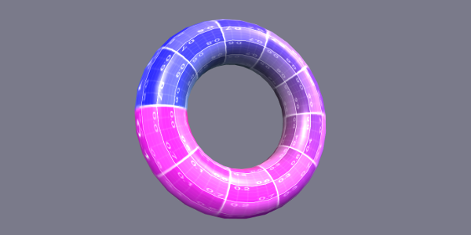
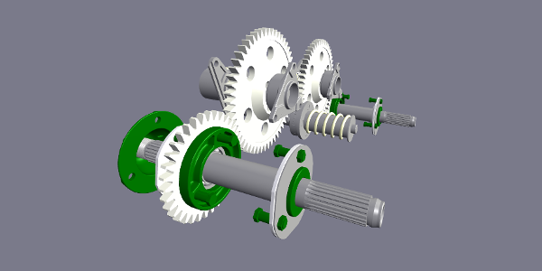
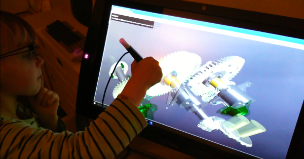

xeogl Concept
Functional overview
xeogl is a WebGL-based 3D engine geared towards visualization applications in science, technology, engineering and mathematics (STEM).
xeogl focuses on letting you:
- import models from formats such as glTF,
- view models with zSpace, WebVR, Cardboard and other effects,
- programmatically access and manipulate model components,
- apply affects for visual emphasis,
- navigate components with the camera,
- interact with components using mouse, stylus etc.,
- query and track component positions and boundaries,
- profile engine performance to optimize content and
- define new engine component types.
xeogl is:
- open source (MIT),
- data driven, keeping things succinct and letting you focus on content,
- easy to learn, providing sensible defaults for everything, and
- thoroughly optimized, using game engine techniques like task queueing, caching, lazy-evaluation and GL state sorting.
Creating a 3D scene
To get a feel for the API, let's start with a very simple example in which we'll create the spinning torus shown in the screenshot below.
First, include xeogl.min.js in your HTML page:
<script src="xeogl.min.js"></script>
Using the JavaScript API, create your 3D scene as an entity-component graph, as shown in the diagram below. Note how a scene is basically a bunch of components that are tied together by entities.
// In this example we'll add components to the default scene,
// which will automatically create a WebGL canvas for us
var geometry = new xeogl.TorusGeometry({
radius: 1.0,
tube: 0.3
});
var material = new xeogl.PhongMaterial({
diffuseMap : new xeogl.Texture({
src: "textures/uvGrid2.jpg"
})
});
var entity = new xeogl.Entity({
geometry: geometry,
material: material
});


Defaults
xeogl provides defaults for pretty much everything, which means that we only need to create things wherever we need to override those defaults. In the previous example we even relied on xeogl to provide a default scene and canvas for us. For our entity, we provided our own material and geometry components, leaving the entity to fall back on the scene's default flyweight instances for all the other components it needs (camera, lights etc).
Editing scenes
You can edit everything in your scene dynamically, at runtime. Create and destroy components, link or unlink them to each other, update their properties, and so on. Let's add rotation and scale transforms to our torus:
// Rotate and scale our torus entity
entity.transform = new xeogl.Rotate({
xyz: [0,1,0],
angle : 0,
parent: new xeogl.Scale({
xyz: [2, 2, 2]
})
});
// Update geometry parameters to increase torus size entity.geometry.radius *= 2.0; entity.geometry.tube *= 2.0;
Animating scenes
Animate scenes by updating component properties. Almost everything in xeogl fires change events that you can subscribe to, which is very handy for scripting and extension.
// Listen for updates to the rotation angle
entity.transform.on("angle", function(value) {
console.log("Rotation angle is now: " + value);
});
// Update the rotation angle, which fires our listener
entity.transform.angle = 90.0;
Let's start the torus spinning:
entity.scene.on("tick", function () {
entity.transform.angle += 0.5;
});
Importing models
Got a model you want to quickly view in the browser? Use some of xeogl's higher-level components, which are built on the components we just saw in the previous example. Let's load a glTF model of a gearbox:
// Load a glTF model into the scene
var model = new xeogl.GLTFModel({
src: "models/gltf/gearbox/gearbox_assy.gltf"
});
// Fit the whole model in view
var cameraFlight = new xeogl.CameraFlight());
cameraFlight.flyTo(model);
// Use a BIM-style camera control to navigate
// the model with the mouse and keyboard
var cameraControl = new xeogl.BIMCameraControl();

Viewing effects
Want to view your model in WebVR? Just drop in a component to activate the desired effect. Let's view our model with simple split-screen stereo:
var stereoEffect = new xeogl.StereoEffect({
eyeSep: 1.2,
focalDist: 20,
aperture: 45,
});

How about WebVR with quad-buffered stereo, 3D tracking eyewear and stylus interaction? Let's explore our model with a zSpace viewer and reposition some of its parts it with the stylus:
// Deactivate the previous effect stereoEffect.destroy(); // Activate zSpace effect with quad-buffered stereo var zspaceEffect = new xeogl.ZSpaceEffect(); // Activate the zSpace stylus var zspaceStylusControl = new xeogl.ZSpaceStylusControl();
Check out our UX tester at work, dissecting the gearbox model with xeogl running on the zSpace 300. She's loving the uncanny realism and how she can drag all those parts around in the air with the stylus.